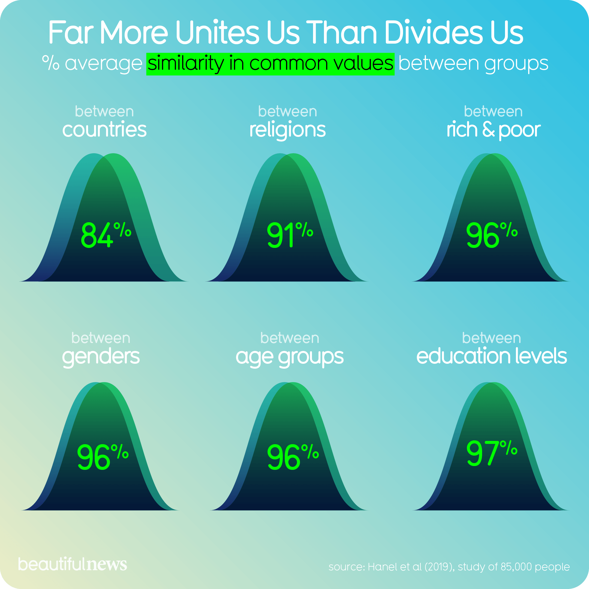

Visualization

Source: Beautiful News
Critique
Why I Chose This Visualization
The infographic that stood out to me was titled “Far More Unites Us Than Divides Us” from Beautiful News. I feel strongly about the polarization that exists in our country, so this topic immediately caught my attention. My daughter works in Washington, D.C., and sometimes when I say that, people react in a way that makes me feel like I need to explain what that means. I usually describe her work as trying to help make the world better, because that feels like something most people can connect with. That is also why this infographic stood out to me. It focuses on what people have in common instead of only showing what divides them.
The write-up connected to the infographic explains how rare it is to see a visual that focuses on similarities instead of differences. That is probably why I responded to it so much. We are living in a very polarized time, but I still believe most people want the same basic things in life. Most people want safety, opportunity, and a good future for their children and grandchildren. Where people usually split is not always on the goal itself, but on how they think that goal should be reached.
I have had many conversations with people who do not agree with me on everything, but those conversations can still end with understanding. That is what this infographic made me think about. Social media can make it seem like everyone is completely divided all the time, but that does not always match what I experience in real conversations.
Information Resolution
Looking at the graphic through Tufte’s idea of information resolution, I think the visualization is powerful but also limited. The message is easy to understand. The design is simple, positive, and visually appealing. It quickly communicates that people may have more in common than we usually assume. In that way, the infographic is successful because the viewer does not have to work hard to understand the main point.
At the same time, the graphic does not give a lot of detail. Tufte’s idea of information resolution asks us to think about how complete and comprehensive a graphic is. This infographic gives a clear emotional message, but it does not show enough detail about the categories, groups, or differences inside the data. The source material explains that similarities across groups can often be very high, even when differences are still statistically significant. That is important, but the graphic itself does not show much of that complexity.
For example, the curves and overlapping shapes suggest similarity, but they do not show where similarities are strongest or weakest. They also do not show which topics had the most overlap or whether some issues were more divided than others. I think the graphic works well as a broad message, but it leaves me wanting to dig further into the data. A little more layering or detail by category would give the viewer a fuller picture without completely taking away from the beauty of the design.
Effects Without Causes
One concern I noticed is that the graphic shows a positive outcome without explaining much about what produced it. It tells us that people are more similar than different, but it does not really explain why those similarities exist or what factors create the areas of agreement. That matters because a viewer may walk away with a hopeful conclusion, but not a deeper understanding of what is behind the result.
For example, if people agree on safety, opportunity, or wanting a good future, the graphic does not show what experiences, values, or circumstances lead to that agreement. It also does not show where people begin to disagree when the conversation moves from broad goals to specific policies or actions. To me, that is where the story gets more complicated. The graphic gives us the effect, which is similarity, but it does not fully explain the causes behind it.
Overreaching
Another concern is overreaching. The infographic has a very positive message, and I do think that message is important. However, the design could make the viewer feel like division is not as serious as it really is. The data may show that people have more similarities than we think, but that does not mean the differences do not matter. Some disagreements still have real consequences, especially when they connect to politics, rights, safety, or public policy.
This is where I think the graphic leans more toward persuasion than deep analysis. It wants the viewer to feel encouraged, and honestly, I did feel encouraged when I looked at it. But from a critique standpoint, I also think it simplifies a very complicated issue. The conclusion may be true in a broad sense, but the graphic does not give enough detail to support every possible interpretation someone might take from it.
Personal Connection and Source Engagement
This visualization also reminded me of a project I did in a past course on hate crimes. I looked at how much progress was made in the 1960s and how it sometimes feels like we are moving backwards now. What surprised me most was how people responded when I presented the project. I had to present it several times in small groups, and each time people were open, engaged, and willing to share their thoughts with me.
That experience lines up with the message of this infographic. When difficult topics are approached without extremes, people are often more willing to listen. The kind of polarization we see amplified online does not always match what can happen in real conversations. That is why I think the infographic is meaningful, even if it is not perfect from a data perspective.
Conclusion
Overall, I think “Far More Unites Us Than Divides Us” is effective because it is simple, emotional, and easy to understand. It takes a topic that can feel heavy and presents it in a hopeful way. I also think that is why it works so well as a Beautiful News graphic. It is not trying to overwhelm the viewer with data. It is trying to make the viewer pause and think differently.
At the same time, Tufte’s framework helps show where the graphic could be stronger. The information resolution is limited, and the graphic leaves out important details about the categories, causes, and differences inside the data. It also risks overreaching by making a complicated social issue feel simpler than it really is. I still think the visualization is powerful, but I would trust it more if it included more context and allowed the viewer to see both the similarities and the differences more clearly.